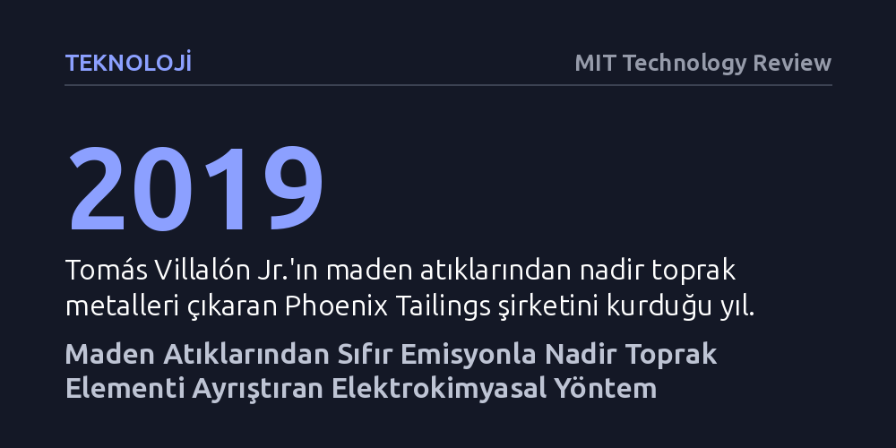

TEKNOLOJI · MIT Technology Review · 2026-10-21
Phoenix Tailings, maden atıklarından nadir toprak elementlerini toksik atık üretmeden ve yenilenebilir enerjiyle sıfır karbon salımıyla ayrıştıran elektrokimyasal bir yöntem geliştirdi. Bu teknoloji, kritik minerallerin tedarikinde geleneksel metalurjinin yarattığı ağır çevre kirliliğini tamamen ortadan kaldırmayı hedefliyor.
Temiz enerji teknolojilerinin can damarı olan nadir toprak elementlerinin, çevreye zehir saçmadan ve karbon salmadan doğrudan maden atıklarından elde edilebileceğini gösteriyor.

Meksika'nın çelik ve metal imalat merkezi Monterrey'in üzerini kaplayan yoğun duman tabakası, Tomás Villalón Jr.'ın çocukluğuna dair hafızasında yer eden en sarsıcı manzaralardan biriydi. Teksas'ta büyümesine karşın ailesinin köklerinin bulunduğu bu kente her gittiğinde, solunan havanın ne kadar zehirli ve problemli olduğunu küçük yaşta hissetti. Malzeme bilimi ve mühendisliği alanında uzmanlaşan Villalón, bu kişisel tanıklığı mesleki vizyonuna dönüştürdü; kendi ifadesiyle “Metalin nasıl üretildiğini ve nelere yol açtığını gördüğüm için bu alanda motive oldum.”
Sürdürülebilir metalurjiye dair somut adımlar, Villalón'un MIT'deki lisans eğitiminin son senesinde, çelik üretimini karbonsuzlaştırmaya odaklanan Boston Metal bünyesinde çalışmasıyla atıldı. Ağır sanayideki karbon salımını dizginleme çabası, onu madencilik sektörünün daha da karmaşık ve kirli kabul edilen bir başka boyutuna yönlendirdi. 2019 yılında kurucu ortakları arasında yer aldığı Phoenix Tailings girişimiyle birlikte, yeni madenler kazmak yerine mevcut madencilik atıklarını dönüştürmeyi amaçlayan bir yola girdi.
Phoenix Tailings'in temel yaklaşımı, geleneksel madenciliğin arkasında bıraktığı devasa pasa yığınlarını (tailings) işlenebilir bir kaynağa dönüştürmeye dayanıyor. Yüzyıllardır doğaya terk edilen bu maden atıkları, çevre için ciddi bir kirlilik tehdidi oluştururken aynı zamanda modern teknolojinin ihtiyaç duyduğu nadir toprak elementlerini de barındırıyor. Şirket geliştirdiği süreçle, sıfırdan maden açmanın getireceği devasa ekolojik yıkıma girmeden bu değerli metalleri atık sahalarından verimli bir şekilde geri kazanıyor.
Bu geri kazanım sürecinin en ayırt edici tarafı, şirkete ait tescilli elektrokimyasal tekniktir. Geleneksel nadir toprak elementi işleme süreçleri son derece zehirli asitler, kimyasal çözücüler ve yoğun enerji gerektirirken, bu elektrokimyasal yöntem hiçbir toksik atık üretmiyor. Dahası, sistem elektrikle beslendiği için yenilenebilir enerji kaynaklarıyla entegre edildiğinde tamamen sıfır karbon salımıyla faaliyet gösteriyor; böylece ayrıştırma işleminin tüm çevresel ayak izi sıfırlanıyor.
Elektrikli araçlardan rüzgar türbinlerine ve gelişmiş savunma sanayii bileşenlerine kadar yeşil dönüşümün neredeyse tamamı nadir toprak metallerine bağımlı durumda. Buna karşılık, bu metallerin mevcut tedarik zincirleri ciddi çevre felaketlerine ve yoğun sera gazı salımlarına yol açarak yeşil dönüşümün kendi amacıyla çelişen bir tablo yaratıyor. Phoenix Tailings'in geliştirdiği yöntem, temiz enerjinin ihtiyaç duyduğu hammaddeleri kirli süreçlerle üretme zorunluluğunu ortadan kaldırma potansiyeli taşıyor.
Geliştirilen bu elektrokimyasal yaklaşım, maden atıklarını bir çevre felaketi olmaktan çıkarıp döngüsel ekonominin değerli bir girdisi haline getiriyor. Toksik kimyasalların ve karbon emisyonlarının devre dışı bırakıldığı bu yeni metalurji modeli, geleceğin kritik hammadde ihtiyacını karşılarken gezegene ek bir bedel ödetmemenin mümkün olduğunu kanıtlıyor.